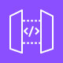

01 · Defer fixed infrastructure
Start the MVP with S3, DynamoDB, and request-driven Lambda. Measure search volume and graph traversal needs before adding a graph database or dedicated search.
An open-source project that connects documents, code, tickets, and conversations. Start with a small MVP and expand ontology and search as your needs grow.
Start with ingestion, storage, and retrieval without an approval workflow.
External SaaS · customer network
Scope limited by permissions


GitHub App / OAuth
Avoid long-lived personal tokens




Expand when you need ontology reasoning, graph traversal, or semantic search.
External SaaS · customer network
Preserve access policies · provenance

The diagrams show target designs. The table describes what the repository does today.
← Scroll horizontally to see the full table →
| Capability | Status | Current scope |
|---|---|---|
| GitHub · GitLab public PRs/MRs | Local implementation | Ingestion, S3 storage, and source-revalidated search · LocalStack |
| GitLab.com private MRs | Local implementation | OAuth PKCE, project collection, and requester-checked search |
| GitHub private PRs · Teams · Linear · Atlassian sites | Preview | OAuth / GitHub App connection and per-user previews |
| Jira/Confluence content · self-hosting · source files | Planned | Connection, source permission sync, and ingestion are not implemented |
| AWS deployment · COA · production authorization | Planned | IaC, tenant isolation, source ACLs, auditing, and production validation are needed |
Estimate monthly costs with the AWS Pricing Calculator after choosing a Region and usage assumptions.
Start the MVP with S3, DynamoDB, and request-driven Lambda. Measure search volume and graph traversal needs before adding a graph database or dedicated search.
Neptune Serverless has a minimum of 1 NCU per instance. OpenSearch Serverless NextGen can be configured for 0 OCUs. COA currently defaults to a minimum of 2 OCUs, so check deployment settings, storage costs, and restart latency.
Ingest only changes and batch embedding and model calls. Account for budget alerts, log retention, NAT gateways, endpoints, KMS, and secret storage.
Costs depend on the deployment Region, traffic, storage, availability, data transfer, and model usage. These diagrams alone cannot determine a monthly bill.
Develop connectors, public search, and requester-checked private GitLab MR search locally with LocalStack. Do not expose the prototype for production use.
Implement tenant and user authentication, source permission and deletion propagation, secret protection, audit logs, and integration tests against real services.
See GitHub Actions for test and backend mutation results. UI mutation testing and additional connectors are tracked in issues.